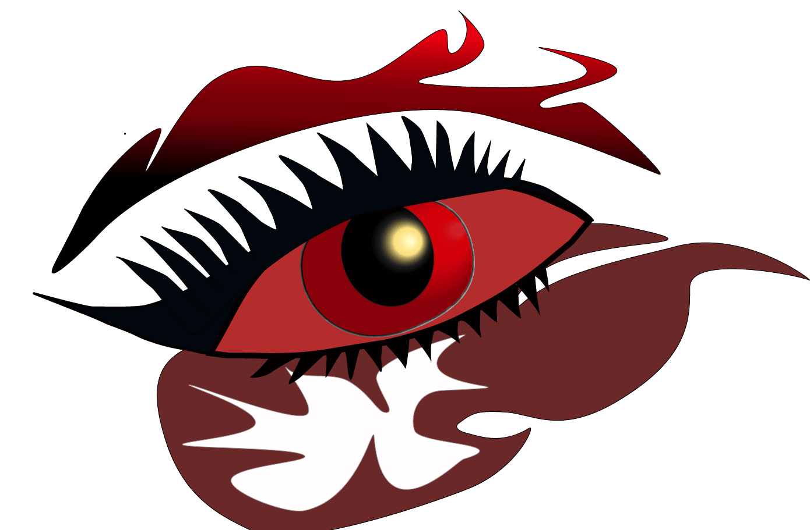

For my first animated GIF, I created a blink animation using artwork that I desiged in Adobde Illustrator and the imported into Photoshop. I organized the eye illustration into separate layers so I could control each part of the motion more easily. In Photoshop, I used the Timeline panel to create a drame animation and adjusted the eyelid position across several drames to show the eye opening and closing. I kept the movemenet simple and readale so the blink would loop smoothly. I experimented with frame delay settings to control the speed and make the motion feel natural. This exercise helped me understand how even a small change between frames can create the illusion of life and expression.

For my second animated GIF, I crated a cut-up cinema animation using a photograph and Photoshop's PUppet Warp tool. I first selected and isolated the figure from the background, then duplicated the image and made slight pose changes by adjusting different parts of the body. These small changes created a sense of motion across the sequence. I arranged each pose as a separayed frame in the Timeline panel and tested different playback speeds until the animation looked fluid. I also thought abot how gesture, repetition, and rhythm can make a short lopp more interesting. This process showed me how GIFs can transfrom a still image into a playful and expressive moving composition.

The animated GIFs project was fun and interesting to do and has been one of my favorite assignments, helping me understand how the basics of animation work through individual frames. Animation has always been something that captures my attention because of how difficult it looks. Now I know it can seem a bit complicated at first but when you learn it, you realize that with practice, time, patience, and dedication, you can achieve great results. Creating the blink animation made me realize how simple things can easily come to life, showing emotions and my ideas through artwork. I enjoyed working on the cut-up cinema project, but it was a little creepy to see how even a simple photograph can be manipulated with tools like Puppet Warp. Another thing I learned is how important details are in animation. At first, it was a little confusing and I didn’t pay much attention to small details, but I started to see how those details help create realistic movement. This project took time but it helped me to improve my knowledge on animation. The final result made me feel proud, more creative and confident working with Photoshop, the Timeline, and Puppet Warp. This project taught me that animation even with limitations can create something engaging and visually interesting showing that creativity depends on how you choose to use what you have.